Open to global opportunities · Pakistan & GCC experience
I build AI that understands place, evidence & people.
I’m Muhammad Safdar — a GIS specialist of 14+ years turned Generative AI & GeoAI engineer. I ship Python applications that connect language models, reviewed tools and spatial data to real decisions.
- Years in GIS & remote sensing
- 14+
- Deployed applications
- 37
- Agentic AI products
- 12
- Evaluated ML studies
- 8
01 — Selected work
Flagship builds, from conversation to reviewed action.
A handful of the products I’d show first: multi-agent systems, realtime voice, evidence-grounded research and spatial intelligence on real imagery.

GeoAI & GIS
Islamabad Feature Intelligence
Sentinel-2, NDVI & land-cover dashboard
245,909 building footprint references on an expanded map with docked feature details and optional 3D height scenarios (assumed, not measured).


02 — Full index
Every project, live and inspectable.
Filter by discipline or search by tool. Each card shows the deployment’s current health from the automated check.


Document Intelligence
Lexora Legal Research
Legal retrieval workspace
Browser-based legal research demo with retrieval over source passages and cited answers.


Document Intelligence
HIS AI Agentic Solutions
Specialist-agent showcase
Agents for reports, inspections and spatial checks, with tools, validation and human approval built in.
GeoAI & GIS
Islamabad Feature Intelligence
Sentinel-2, NDVI & land-cover dashboard
245,909 building footprint references on an expanded map with docked feature details and optional 3D height scenarios (assumed, not measured).


GeoAI & GIS
GeoSentinel AI
Nullah Lai · Margalla catchment
Flood dashboard, incident intelligence, evidence review and work-order verification.

GeoAI & GIS
GeoSentinel Drain FloodOps
Drainage network operations
Drainage and flood-operations workspace in the GeoSentinel family.
ChatGPT sign-in required
GeoAI & GIS
Infrastructure GIS Command
Utilities · field verification · QA
Punjab infrastructure prototype for utilities, progress monitoring and data QA; overlays and metrics are illustrative.

GeoAI & GIS
GeoDistill Studio
Image dataset intelligence
In-browser pixel and resolution inspection, colour features and class distribution from uploaded labels.

GeoAI & GIS
TerraPrep · Land Cover Dataset QA
Manifest & leakage checks
Manifest validation, split-leakage checks and SHA-256 duplicate matching so datasets are audited before the next training run.

GeoAI & GIS
RAG & GeoAI Labs
Three in-browser demos
Lexical evidence search with cited excerpts, a land-cover class explorer and a CSV auditor — nothing uploaded leaves the browser.
Machine Learning
Prediction Studio
CSV upload · model audit · trends
Client-side calculations with labeled samples, row validation and analyzed-record exports.
Machine Learning
Applied ML Analysis
Eight evaluated studies
Classification, regression, segmentation and time-series forecasting with original charts and evaluation notes.


Engineering & OCR
Planora AI — CAD, BIM & GIS
Brief → CAD/BIM → MEP → costing
Concept-to-costing flow across CAD/BIM, MEP and GIS; engineering outputs require professional review.


No projects match that search.
03 — Applied machine learning
Eight studies, measured honestly.
Classification, regression, clustering, NLP and forecasting — each with held-out evaluation, error analysis and clear caveats. Educational evaluations, not production claims.
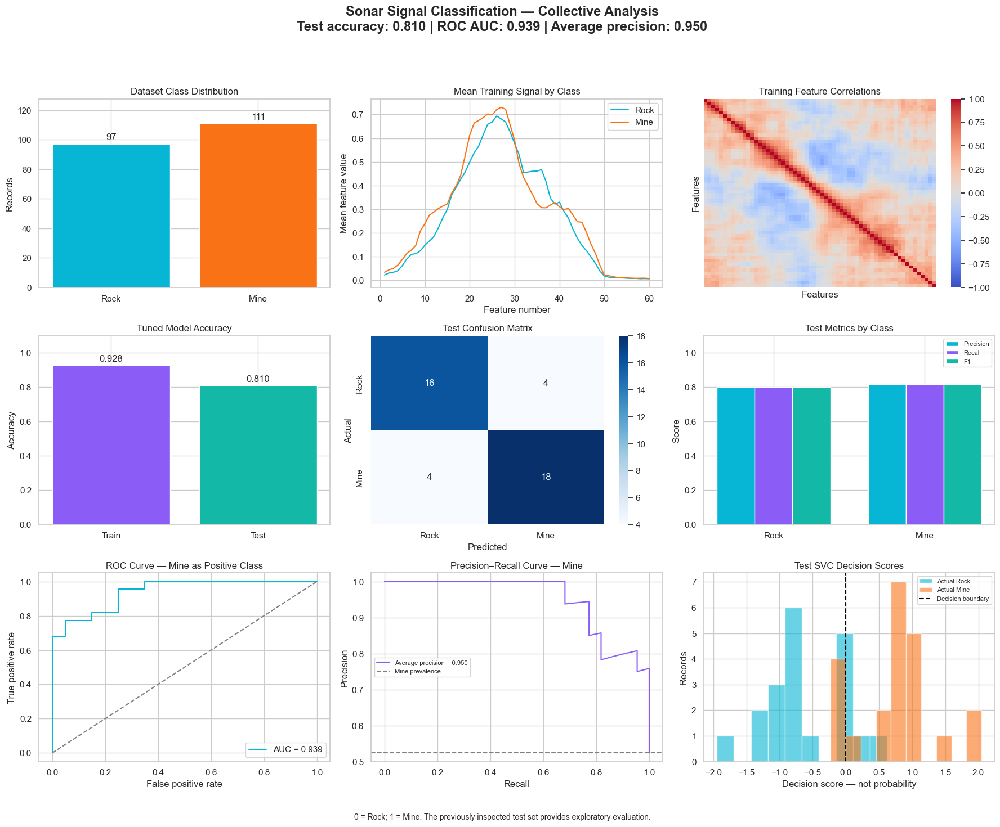
0.939ROC AUC
Sonar Signal Classification
Accuracy 81.0% · AP 0.950
Tuned SVC on 42 held-out samples.
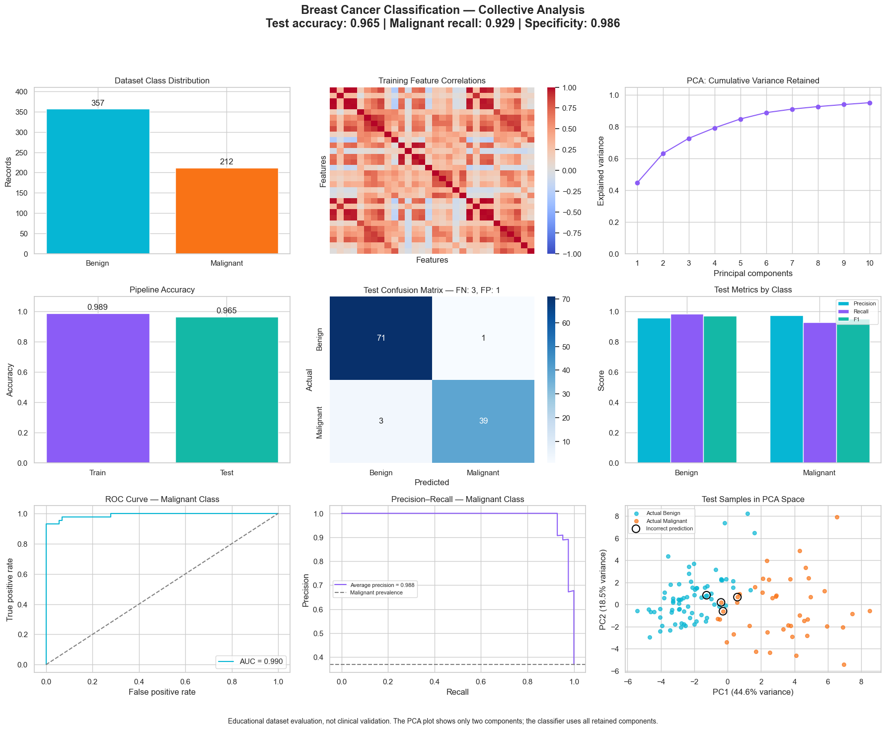
96.5%Accuracy
Breast Cancer Classification
Malignant recall 92.9% · AUC 0.990
Educational evaluation, not clinical validation.
83.7%Fraud recall
Credit Card Fraud Detection
Precision 88.2% · AP 0.861
Threshold 0.25: 82 caught, 16 missed, 11 false alarms.
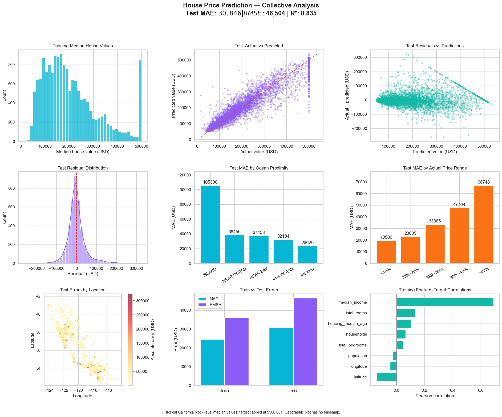
0.835R²
House Price Prediction
MAE $30,846 · RMSE $46,504
California housing with geographic error analysis.
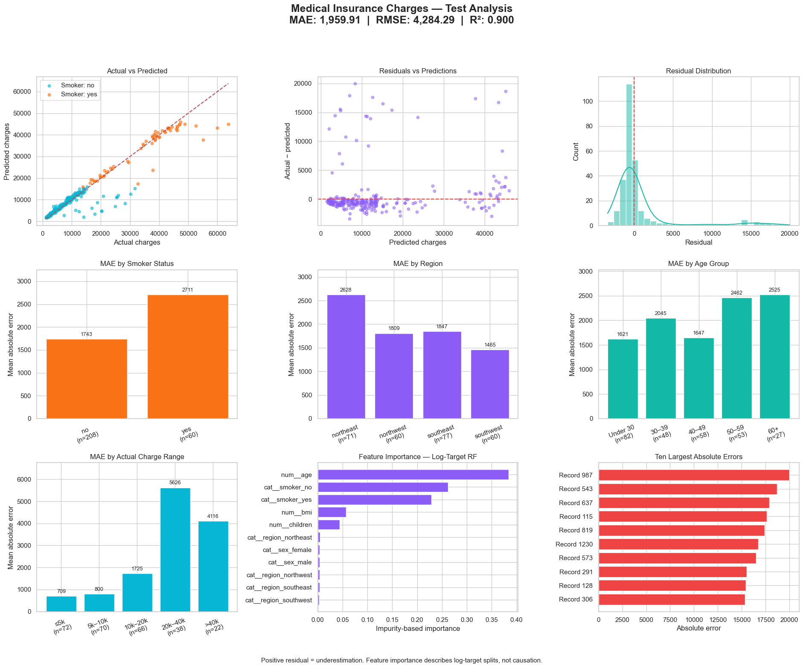
0.900R²
Insurance Cost Prediction
MAE 1,959.91 · RMSE 4,284.29
Log-target random forest with subgroup errors.
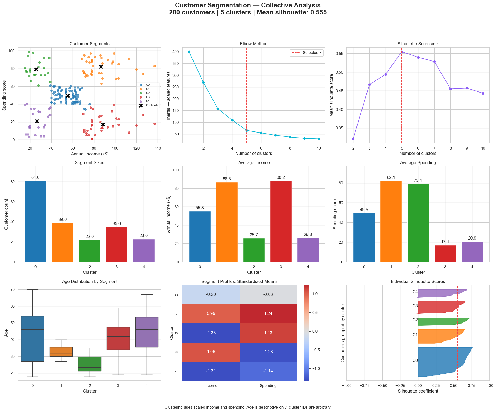
0.555Silhouette
Customer Segmentation
200 customers · 5 clusters
Elbow and silhouette analysis of K-Means profiles.
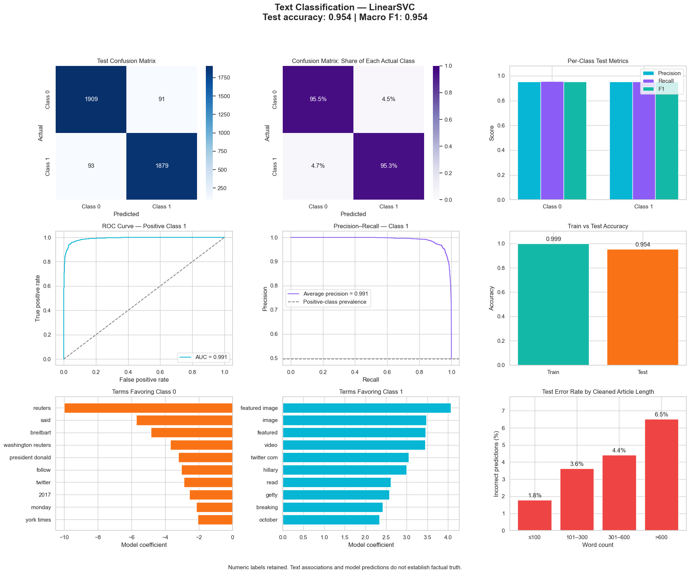
95.4%Accuracy
Fake News Classification
Macro F1 0.954 · AUC 0.991
TF-IDF + LinearSVC; does not verify factual truth.
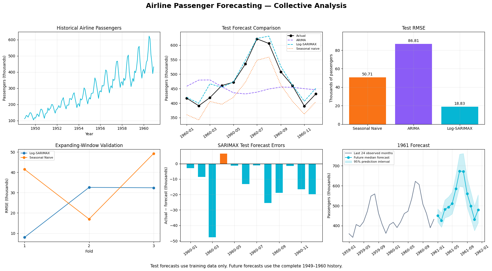
18.83RMSE
Airline Passenger Forecast
vs seasonal-naive 50.71 · ARIMA 86.81
Log-SARIMAX with chronological validation.
04 — How I build
Useful AI is bounded, cited and reviewable.
Fourteen years of government and infrastructure GIS taught me that decisions need provenance. I carry that into every model, agent and map I ship.
- Evidence first. Retrieval and citations before generation.
- Humans approve. Agents propose; named reviewers decide.
- Assumptions labelled. Modeled overlays and scenarios are never presented as surveyed fact.
Tool calling & bounded agent loops
HealthAssist, CareerRainbow, MarketMind and GharBuilder use project-specific tools with review controls and approvals.
Retrieval-augmented generation
RAG Studio, SupportPearlz and LangChain workflows retrieve evidence before answering.
Hybrid retrieval & citations
Semantic + keyword search, passage inspection and source-linked answers.
Speech & realtime conversation
Transcription and generated speech in Voice Agent; browser WebRTC in TravelTalk.
Spatial analysis & data QA
Remote sensing, topology, provenance, spatial validation and suitability workflows.
Supervised learning & evaluation
Classification, regression, cross-validation and honest error analysis.
05 — Experience
14+ years of spatial delivery for government & industry.
Disaster management, infrastructure, agriculture and urban planning across Pakistan and Saudi Arabia — now paired with Python, GeoAI and agentic AI.
Full résumé- 2026 — Present
GIS Specialist
PMU-PDP, Municipal Committee Vehari · Pakistan
GIS support for municipal development projects, spatial data management and project monitoring.
- 2025 — 2026
GIS & GeoAI Specialist
Professional Geo Tech Services FZC LLC · Saudi Arabia
NWC Riyadh wastewater mapping, infrastructure and GNSS delivery, and environmental spatial analysis.
- 2023 — 2025
GIS Expert
TerraSense Consulting · Pakistan
GeoAI land-cover workflows, satellite crop intelligence, wheat estimation and predictive analysis.
- 2021 — 2023
GIS Specialist
FGEHA, Islamabad · Pakistan
Enterprise geodatabases, CAD-to-GIS conversion, topology QA and training of 20+ personnel.
- 2019 — 2021
GIS Manager
Kernel Seeds Corporation · Pakistan
Agricultural GIS, crop analysis, spatial repositories and data governance.
- 2017 — 2019
GIS Manager
PDMA Punjab · Pakistan
Chenab and Sutlej flood intelligence, exposure analysis and emergency situation mapping.
- 2012 — 2017
GIS Professional
The Urban Unit & Loyal Consultants · Pakistan
Urban, land, infrastructure and survey GIS, spatial databases and cartographic production.
Field delivery highlights
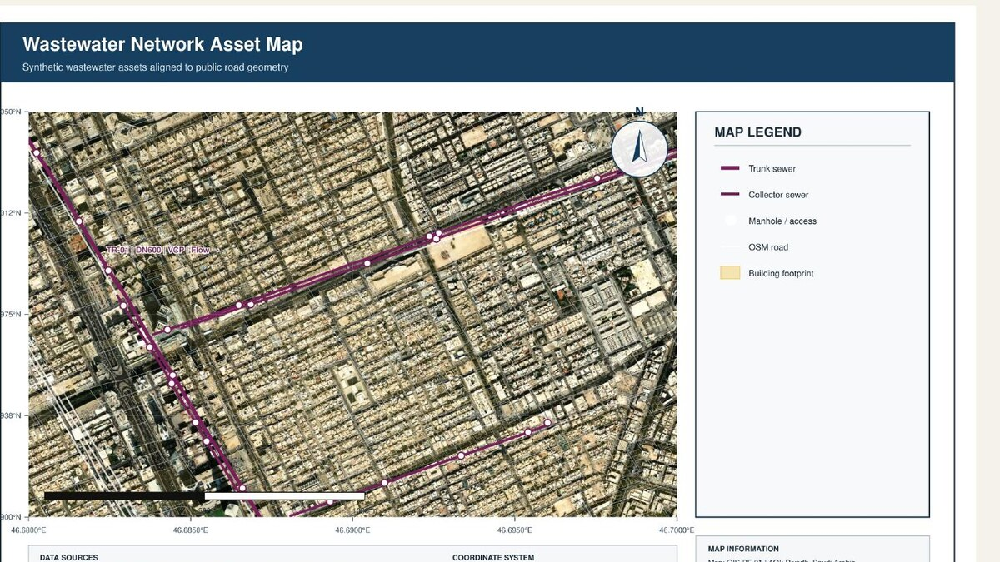
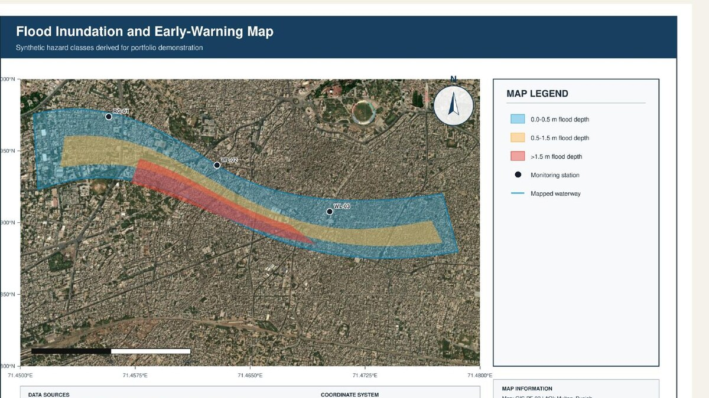
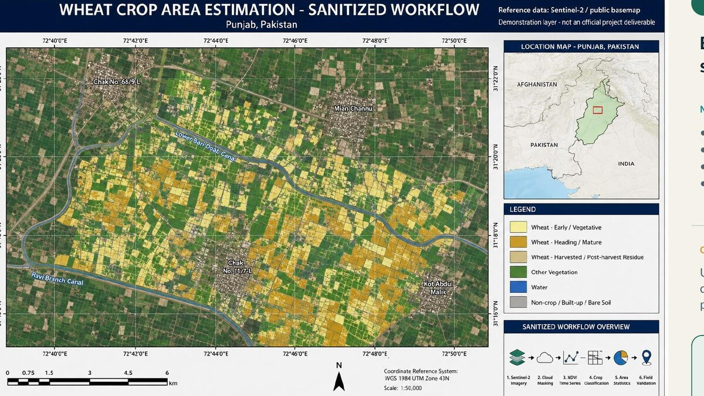
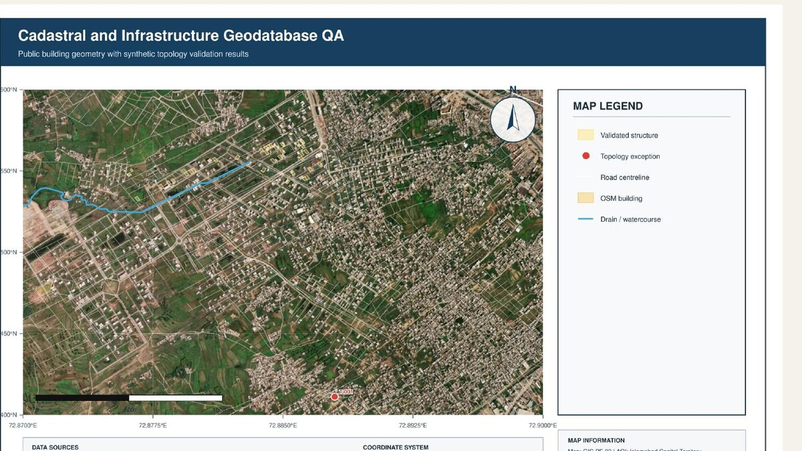
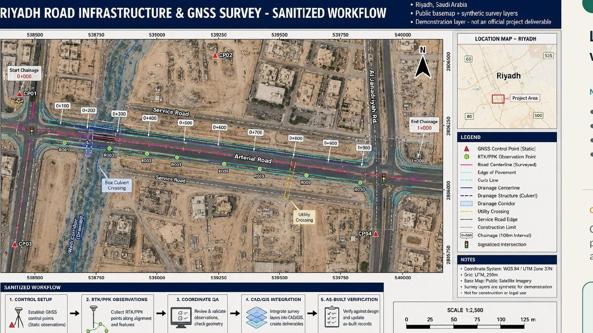
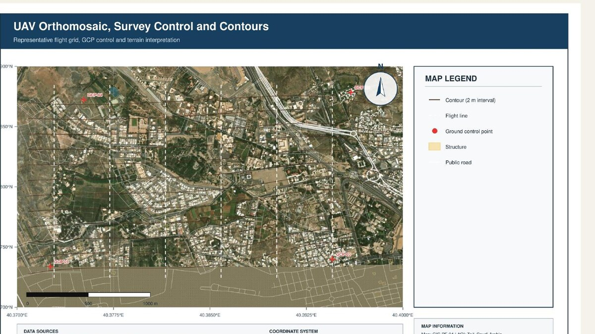
06 — Toolkit
A stack that spans models, maps and dashboards.
Generative AI
- OpenAI SDK
- Claude
- LangChain
- Hugging Face
- RAG
- Tool calling
- FAISS
- SingleStore
ML & Data Science
- Python
- Pandas
- NumPy
- scikit-learn
- TensorFlow / Keras
- OpenCV
- Plotly
- Seaborn
GIS & Remote Sensing
- ArcGIS Pro / Enterprise
- QGIS
- Google Earth Engine
- FME
- Agisoft Metashape
- Sentinel-2
Geospatial Python
- ArcPy
- GeoPandas
- GDAL
- Rasterio
- Shapely
- PyProj
- Folium
- Leaflet
Data, APIs & Apps
- PostgreSQL / PostGIS
- SQLite
- FastAPI
- Flask
- Streamlit
- Docker
- REST
- ETL
BI, CAD & Automation
- Power BI
- DAX
- Power Query
- AutoCAD
- Civil 3D
- BIM / IFC
- n8n
- Make.com
Education
- MSc Geographic Information SystemsUniversity of the Punjab, Lahore
- BSc Computer Science, Economics & StatisticsThe Islamia University of Bahawalpur
Certifications & training
- Python with Full Stack AI — NexSkills, 2026
- Artificial Intelligence Using Python — DigiSkills, 2026
- Data Analytics & Business Intelligence — DigiSkills, 2026
- AWS Cloud Practitioner Essentials
- Cisco Python Essentials 1
- GACA Remote Pilot Certificate
- Esri Spatial Data Science, Imagery & Cartography
07 — Contact
Let’s build useful intelligence.
Hiring for GenAI, GeoAI or GIS — or have a spatial problem that needs an agent?